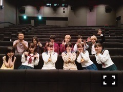
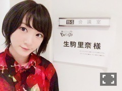

| 2016/08 03 Wed | フォロ方十四フォロー |
生駒です〜ヽ(・∀・)ノ
8月に入り、
いろいろ始まります。
こち亀のお稽古
そして神宮ライブのリハ。
自分の出来る事頑張りまする。
先日はボーリング大会ありました。
当選したいこまふぁむの皆さんありがとうございました

なかなかないみんなと一緒にボーリング大会
しんせんでしたね〜
中には凄い技を出す人もいて、
楽しい時間でしたっ
その後
コープスパーティーBook of Shadows
の舞台挨拶へ行きました！

登壇したメンバーと！
乃木坂の新曲も渡しました

よーこちゃん
野田仁美ちゃんと
公開されて、
改めていろんな事を実感します。
怖いこわーい映画ですが、笑
中を覗いてみると、
人の美しさや、恐ろしさ、
極限状態に置かれた時、
何を感じて動くのか、
愛の形ってなんなんだろう？
と思うシーンなどなど盛りだくさんですっ！
原作も本当に凄いですが、
3次元で動いているキャラクターも是非観に来てください
コープスパーティーという有難いチャンス。
有難い機会だけでは、すましてはいけないと思いました。
実力にしないといけないんだ。
また、キャストの皆さんと、スタッフさんとお仕事してみたい！
だから、不器用なりに、
へたっぴなりに、
これから伸ばして行きたいです！！
伸ばして行きたいのは、
バラエティもっっ！！
何を言われようと、
私はバラエティが大好きです！！
今日、
今年の目標に密かに掲げていた
ヒルナンデス！
に出演する
が叶いました〜(´；ω；｀)(´；ω；｀)


すご〜い(´；ω；｀)
いつも観ていたテレビ〜(´；ω；｀)
またロケなどにも参加出来たらいいなぁとおもいますっ！！
のぎのぎメンバーも沢山出れたらいいなっ
つるの剛士さんは、
かりんちゃんと将棋の師匠さんが同じなんだよとお話ししましたヽ(・∀・)ノ
のぎのぎのお知り合いが広がっていると
なんだか嬉しくなりました
時間が出来たので、
お買い物に行ったら、
服屋さんは秋物が置いてありました。
ですが、
まだまだ夏は続きますっ！
暑さに負けず、
クーラーの冷気でお腹壊さないように
気をつけて、毎日過ごしてくださいねっ

あ〜
ジム行きたいですっ
へばなっ☆彡
コメント(444)
2016/08/03 23:48